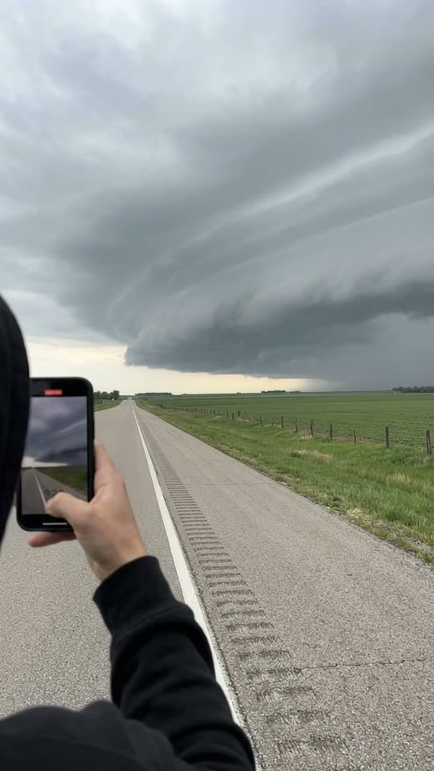
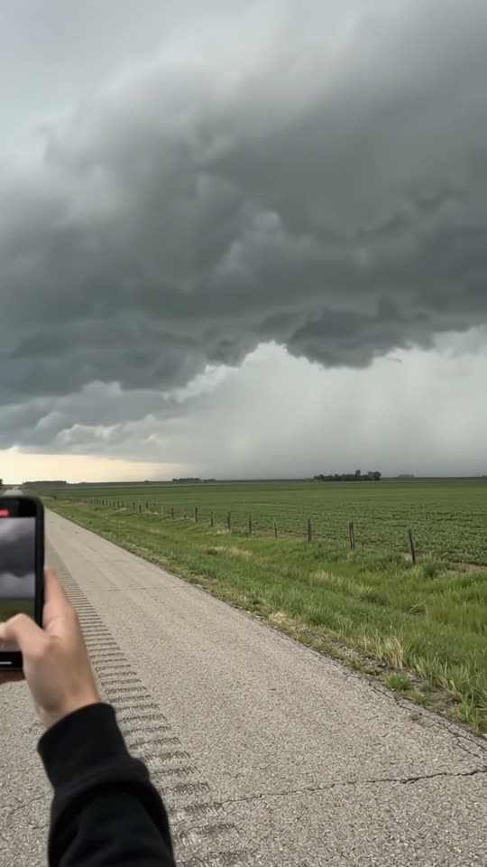
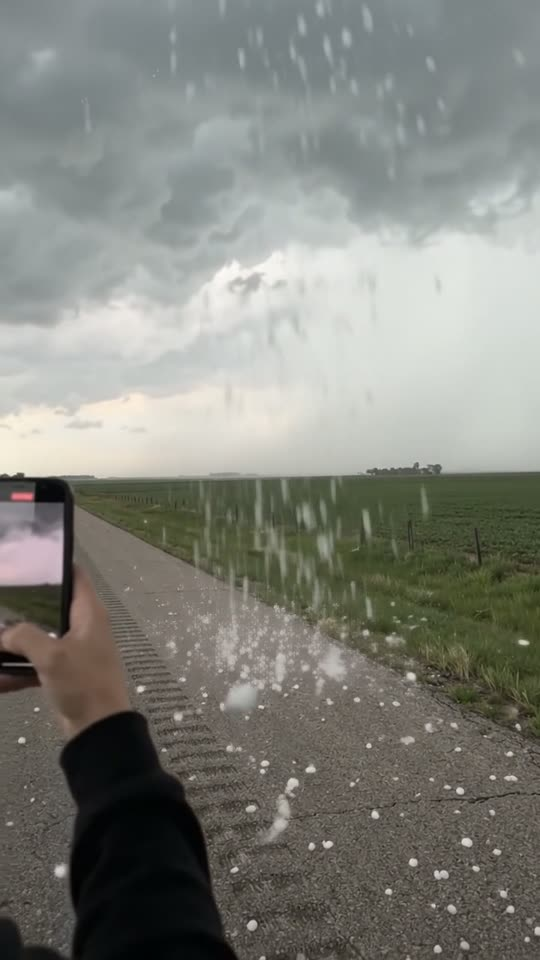
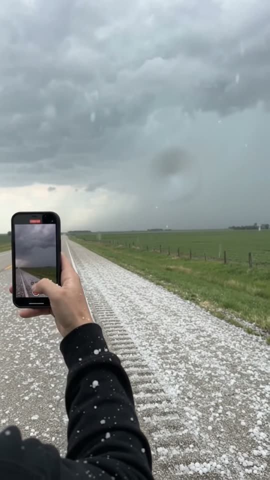

Free prompt pack
One cloud.Then white.
You hold your phone up on an empty country road. A shelf cloud the size of the sky rolls over you, the hail starts, and in a few seconds the whole road turns white. One still image and one prompt, in one take.
Both prompts, in the order I ran them. Hold record on each one to reveal it. Tap the sky to call the hail.
The first frame
Only your hand is in it. This image is frame one: first person on the shoulder of a country highway, your own hand holding a phone up, the road running away and a shelf cloud filling the top half of the sky.
Watch out
Say it is first person and that only the hand and wrist are in view. Describe the person behind the phone and you get a whole man in the shot.

The prompt 148 words
Real first-person photo from the eye height of someone standing on the paved shoulder of a straight two-lane country highway, filming a storm. Their own right hand holds a black smartphone upright in the lower left of the picture, the screen facing us and showing the grey storm, the black cuff of a hoodie at the wrist; only the hand and wrist are in view. The dry grey asphalt runs away ahead, with a white edge line and a row of rumble-strip grooves along the shoulder at the bottom left. To the right, flat green crop fields and a line of dark fence posts. A huge dark grey shelf cloud, smooth and layered like a rolling wall, fills the upper half of the sky and comes down to the far fields, with a pale band of light beneath its edge. Cool flat overcast daylight, natural colour, real detail.
Over and white
Ten seconds, the camera never moves. Add the image as the reference, set 10 s, 9:16, 720p and audio on, and paste the prompt whole.
- 0–3.0 sthe cloud rolls in
- 3.0–6.0 sit passes overhead, first hail
- 6.0–7.5 sthe curtain hits the road
- 7.5–10 severything turns white
Watch out
Write the hail as thin white streaks in the air. Call the stones small and round and the model hangs big white balls in front of the lens.
Fragments



The prompt 1125 words
FORMAT Real handheld first-person storm-chasing video, seen through the eyes of the person filming, as the finished exported video file: the full picture edge to edge, nothing on top of it. The only phone in frame is the one in their own hand; whatever records our picture is never in frame. One continuous take in real time, from one single spot, no cuts. Vertical frame. The video runs at 24 fps. No frame is repeated. Real time, 1x speed, never slow motion. SCENE First person, on the shoulder of a straight country highway across flat farmland: someone holds their phone up to film a huge shelf cloud rolling toward them. The cloud's dark front edge passes overhead, the hail starts, and a white curtain of hail sweeps across the fields and over the road: in a few seconds the road, the grass and the fields turn white with hail, as if everything froze. The take ends in the frozen white, hail still falling, the hand and phone still in frame. REFERENCE IMAGE Use it for the hand and sleeve, the phone, the road, the shoulder, the fields, the shelf cloud and the light. Everything matches it exactly, zero drift. The movement is described below. THE PERSON Nobody is seen. Only the filmer's own right hand, with the black cuff of their hoodie at the wrist, holding a black phone upright, its screen facing us and showing the storm. No head, no shoulder, no second person, no car, no window frame anywhere in the picture. THE STORM One huge dark grey shelf cloud, smooth and layered like a rolling wall, its front edge rolling toward us and passing overhead between 3 and 6 s. Under and behind it, a pale white-grey curtain of hail crosses the fields toward the road. The hail: small white pea-sized stones falling fast and straight down; in the air they are thin white streaks, never round balls hanging in the air; on the ground they bounce once or twice and pile up into a white layer. No lightning, no tornado, no funnel, no snowflakes. LOCATION MAP We are the person, standing on the paved shoulder, facing along the road. The road runs away ahead and meets the horizon left of centre; the white edge line and the rumble-strip grooves run from the bottom-left corner to the vanishing point. Flat green crop fields fill the right, with a line of dark fence posts 15 m away. The shelf cloud's front edge starts 1 km away and comes toward us until it is overhead. FIRST FRAME The hand holds the black phone upright at x 0-25%, y 55-80%, the black cuff at the left edge, the screen showing the grey storm. The rumble-strip grooves and the white edge line run from the bottom-left corner to the vanishing point at x 20%, y 50%. Green fields fill x 30-100%, y 50-68%, the fence posts on the right. The dark shelf cloud fills y 12-50%, its pale lit edge just above the far fields at y 45-50%; lighter grey sky at the top. Instant read: someone filming a giant storm that is about to hit them. No delayed reveal. CAMERA First person at standing eye height, held still: only the small natural sway of a person standing. It stays on this one spot for the whole take: it never moves to another place, never tilts up to the sky, never turns around, never cuts, never zooms, never goes to a wide shot, never shows the person. The hand and phone stay in frame from the first frame to the last. ACTION TIMING 0–3.0 s — The shelf cloud rolls toward us over the fields and grows; the wind bends the crops; the hand holds the phone steady, filming it. 3.0–6.0 s — The cloud's front edge slides up and out of the top of the frame as it passes overhead; the light drops and its dark layered underside fills the sky; under it the white-grey curtain of hail crosses the far fields and the fields behind it fade; the first hailstones hit the asphalt, a few, then dozens, bouncing. 6.0–7.5 s — The curtain reaches the road: hail pours down as thin white streaks, hundreds of stones bouncing on the road and piling into the rumble-strip grooves; stones bounce off the hand and the top of the phone. 7.5–10 s — Everything freezes white: over these seconds the hail covers the asphalt, the rumble strip, the grass and the fields in a solid white layer, and settles white on the sleeve and the top of the phone; the dark fence posts and the white edge line stand out; hail still streaks down; a few drops hit the lens. Hold to the last frame. PHYSICS AND SCALE Real storm physics: the shelf cloud moves steadily; the curtain crosses the fields steadily; hailstones fall straight down at real speed and bounce once or twice, never float, never hang in the air; the white layer builds up over seconds, from scattered stones to a solid white cover, the way a real hailstorm whitens a road. The road, the fields and the fence posts stay in the same place the whole time. One storm, one hand, one road. Nothing morphs. NO FULL-FRAME EVENTS The hail and the grey air never fill the whole frame: the hand and the phone, the dark fence posts and the white edge line are visible in every frame. The picture never goes white or grey from edge to edge; the white lies on the ground, not across the picture. LIGHTING Cool, flat overcast daylight, dropping darker as the cloud passes overhead, then a pale bright white-grey when the ground freezes white; no sun, no lightning flashes. AUDIO No music, no score, no narration, no subtitles. Wind rising over the fields; at 4.0 s the first hailstones tick on the asphalt, growing into a loud clatter on the road and on the phone; at 6.0 s the roar of hail all around. Nobody speaks. No words. LOOK Real handheld storm-chasing footage, seen as the finished exported file: crisp detail, natural colour, flat overcast contrast, light compression, no colour grade, no film grain, no lens flare, no slow motion, never CGI. No camera app interface on our picture: no shutter button, no gallery thumbnail, no record button, no icons, no timer, no recording dot, no frame lines; the only screen is the phone in the hand. POSITIVE LOCKS Nobody in the picture but the filmer's own hand. One phone. One road. One storm. No captions, no subtitles, no on-screen text, no watermark, no logos, nothing on top of the picture. ONE HAND. ONE ROAD. ONE STORM. NO CUTS. NO PERSON. NO LIGHTNING. NO TORNADO. NO MUSIC.
Rule 01
One spot, one take
The camera stays on one spot and never turns. Ask for a turn just as the hail arrives and the model cuts to another road with another person.
Rule 02
The cloud moves, not you
To pass overhead, the cloud's front edge slides up and out of the top of the frame. The camera never has to look up.
Rule 03
White on the ground
Everything can freeze white, as long as the white lies on the ground. A frame that goes white edge to edge is where the model cuts.
That's the whole build
Now go standin your own storm.
If yours works, send it over. I read every DM and the good ones end up on the account.
@martiiifons